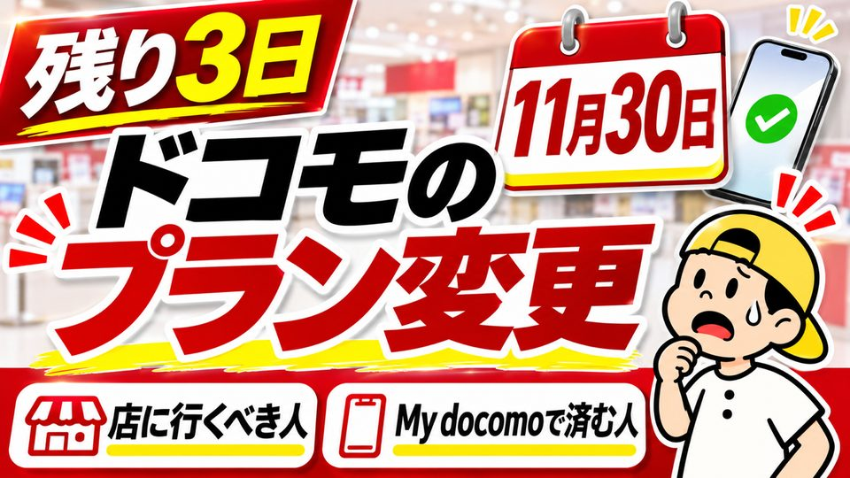
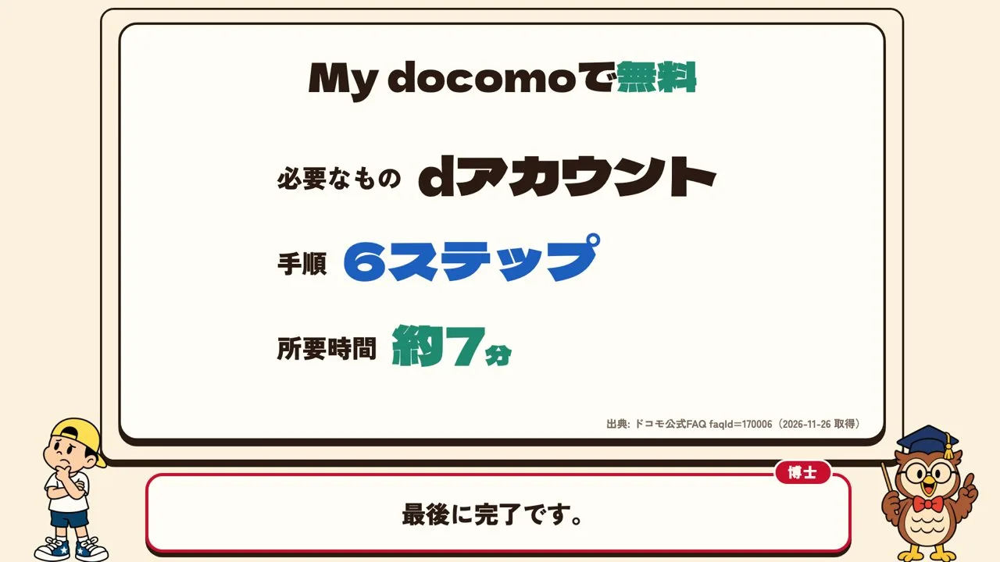
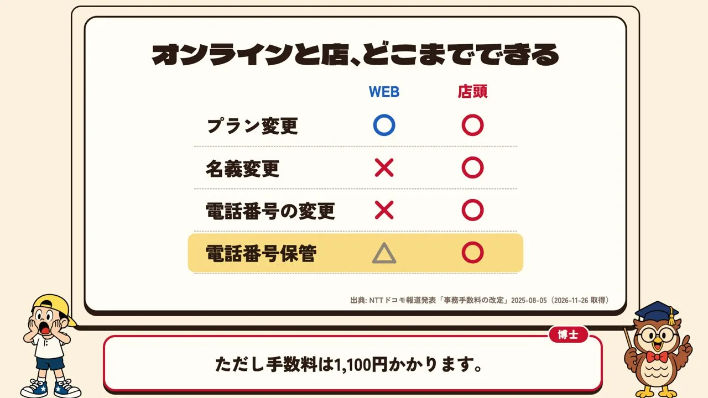
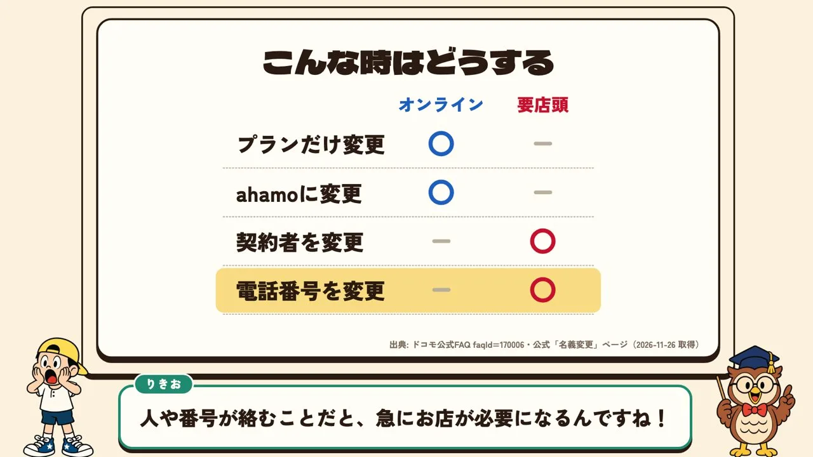
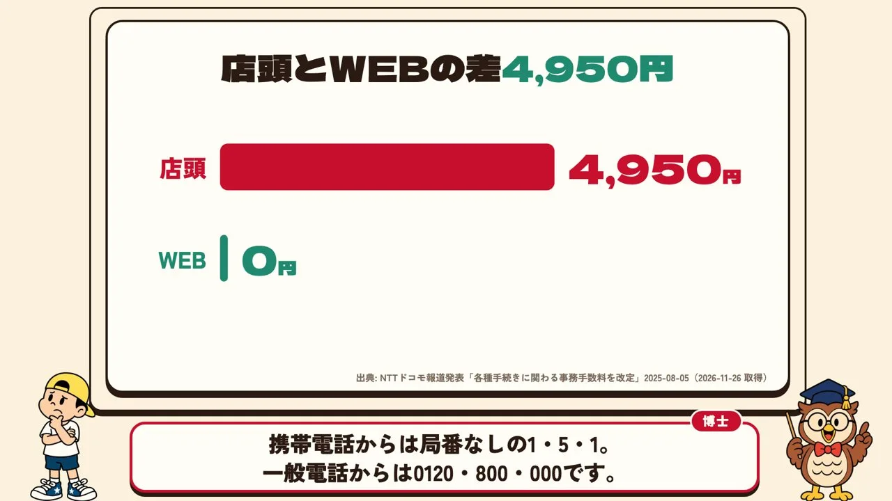
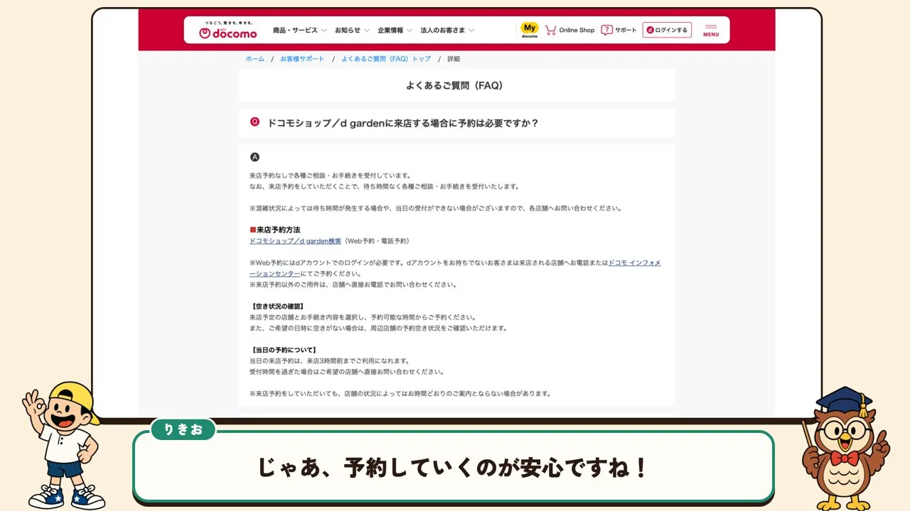
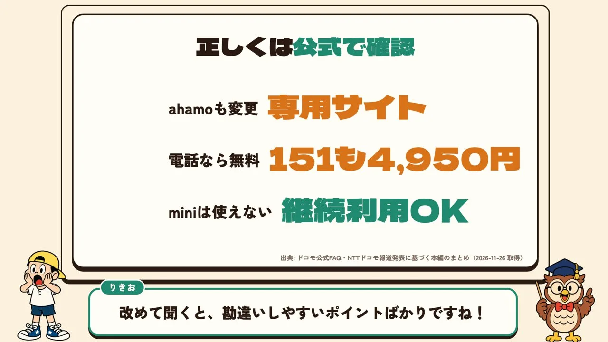

ドコモの「ドコモ mini」という料金プランは、2026年11月30日（月）で新規の申し込みが終わります。今すでに契約している人はそのまま使い続けられるので、終わるのは「新しく申し込む」ことだけです。この記事では、締め切り前に動きたい人のために、ドコモのプラン変更のうちオンライン（My docomo）だけで済むものと、窓口（店頭・コールセンター）でないとできないものを、公式の資料をもとに仕分けました。

▶ この記事の内容を動画で見る（お金の総合チャンネル）01My docomoだけで済む変更

料金プラン変更は、My docomo（Web）から手続きできます。必要なのはdアカウントかネットワーク暗証番号だけで、6ステップ・約7分。手続き自体に手数料はかかりません。ただし同じ月に3回目の変更をすると、1,100円の手数料がかかります。 端末はそのまま、プランだけを変えるなら、ほとんどの場合はこれで完結します。
結論同じ端末のままプランだけ変えるなら、今すぐMy docomoで完結します。
02店頭かコールセンターが必要な変更

ドコモの事務手数料の改定資料を見ると、WEBの無料対象に載っているのは新規契約・契約変更・機種変更・eSIM再発行の4種類だけです。このうち、契約者を家族など別の人の名前に変える「名義変更」と、電話番号の変更の2つは、電話（151等）でも手続きできず、店頭のみです。
| 手続き | My docomo | 店頭 |
|---|---|---|
| 料金プラン変更 | ○ | ○ |
| 名義変更（契約者を別人に） | × | ○ |
| 電話番号の変更 | × | ○ |
| 電話番号保管（1,100円） | ○ | ○（4,950円） |
結婚などで契約者本人の名字が変わっただけの場合は、「改称」という別の手続きになります。こちらは多くの場合My docomoのオンラインで完結し、契約事務手数料も無料です。契約する人が変わるか、名字だけが変わるかで扱いが違うという点が、今回調べて分かった一番のポイントです。

- プランだけ変える・ahamoへの変更: オンラインで完結
- 契約者を別の人に変える（名義変更）: 店頭が必要
- 電話番号を変える店頭が必要
ahamoへの変更はahamoの公式サイトから、別の手続きになります。
03手数料の違い

店頭の事務手数料は、2025年9月5日の改定で3,850円から4,950円（税込）に上がりました。WEBで対応している手続きなら、引き続き無料です。同じ契約変更でも、窓口を選ぶだけで4,950円の差が生まれます。
注意名義変更や電話番号の変更のように店頭でしかできない手続きは、この手数料を払うしかありません。コールセンター（ドコモ インフォメーションセンター・151／0120-800-000）でも、名義変更は店頭と同じ4,950円です。
04来店するなら、段取りも確認を

ドコモショップは来店予約が無くても受け付けていますが、予約をすると待ち時間なく案内してもらえます。当日の来店予約は、来店の3時間前まで利用可能です。近くの店舗に空きが無い場合は、同じサイトで周辺店舗の予約状況も確認できます。
公式の案内ではありませんが、通信ショップの来店レポート記事では、開店直後や平日の午前中が比較的空いている傾向、土日や夕方・お昼休憩の時間帯は混雑しやすい傾向にあると紹介されています。11月30日は月曜日で、しかも新規受付の最終日にあたるため、混雑を覚悟して早めに動くのがおすすめです。
05勘違いしやすい3つ

- 「ahamoもMy docomoから変えられる」→ 誤解。ahamoは専用サイトから手続きします
- 「電話なら手数料がかからない」→ 誤解。名義変更は151でも店頭と同じ4,950円です
- 「11月30日を過ぎたら今のminiが使えなくなる」→ 誤解。今契約している人は、そのまま使い続けられます
06よくある質問
ドコモminiの新規受付が終わると、今契約している人はどうなりますか？
そのまま使い続けられます。終わるのは「新しく申し込む」ことだけで、今の契約が解約になることはありません。
料金プラン変更に手数料はかかりますか？
My docomoからの手続き自体に手数料はかかりません。ただし、同じ月に3回目の変更をすると1,100円の手数料がかかります。
名義変更はMy docomoでできますか？
できません。名義変更（契約者を別の人に変える手続き）は、ドコモショップのみの受付です。手数料はご家族間（三親等以内）なら無料、それ以外は4,950円（税込）です。
結婚して名字が変わった場合も店頭に行く必要がありますか？
多くの場合、店頭は不要です。契約者本人の氏名が変わっただけの「改称」という手続きは、My docomoのオンラインで完結し、契約事務手数料も無料です。
07まとめ
- ドコモminiの新規受付は2026年11月30日（月）まで。既契約者は継続利用可
- 同じ端末のままのプラン変更は、My docomoで無料・約7分
- 名義変更・電話番号の変更は店頭かコールセンターが必要（店頭は4,950円）
- 結婚等での名字変更（改称）は多くの場合オンラインで完結。名義変更とは別物
- 来店するなら予約をして、できれば平日の早い時間を選ぶのがおすすめ
仕分けの詳しい流れと公式の画面は、動画でも解説しています。